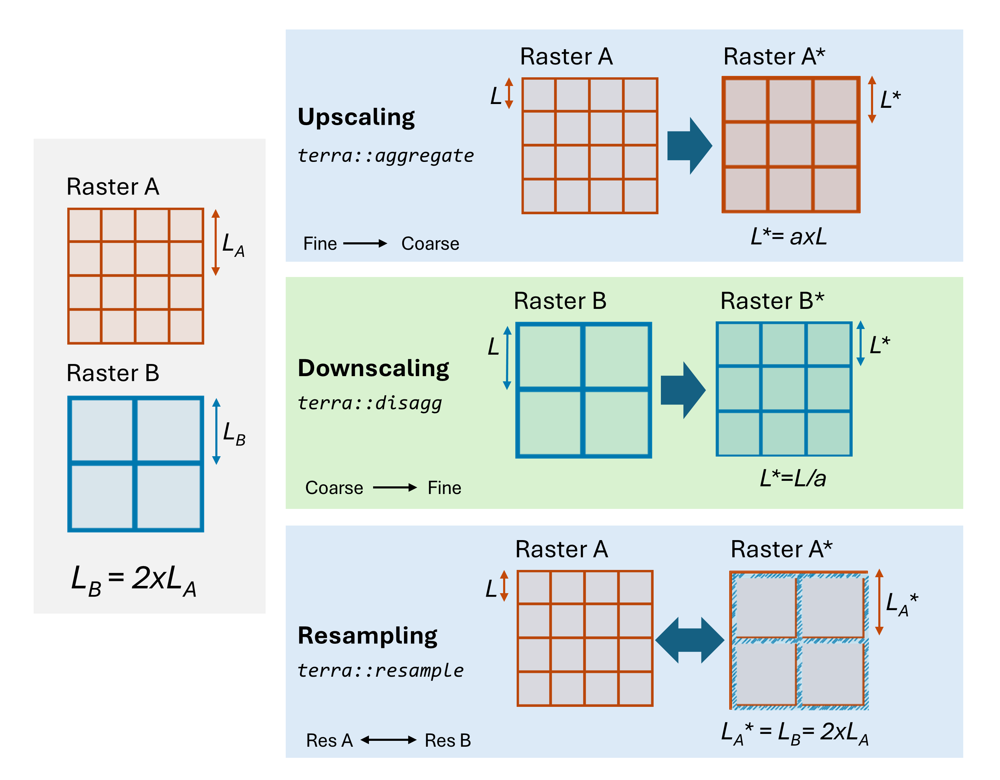
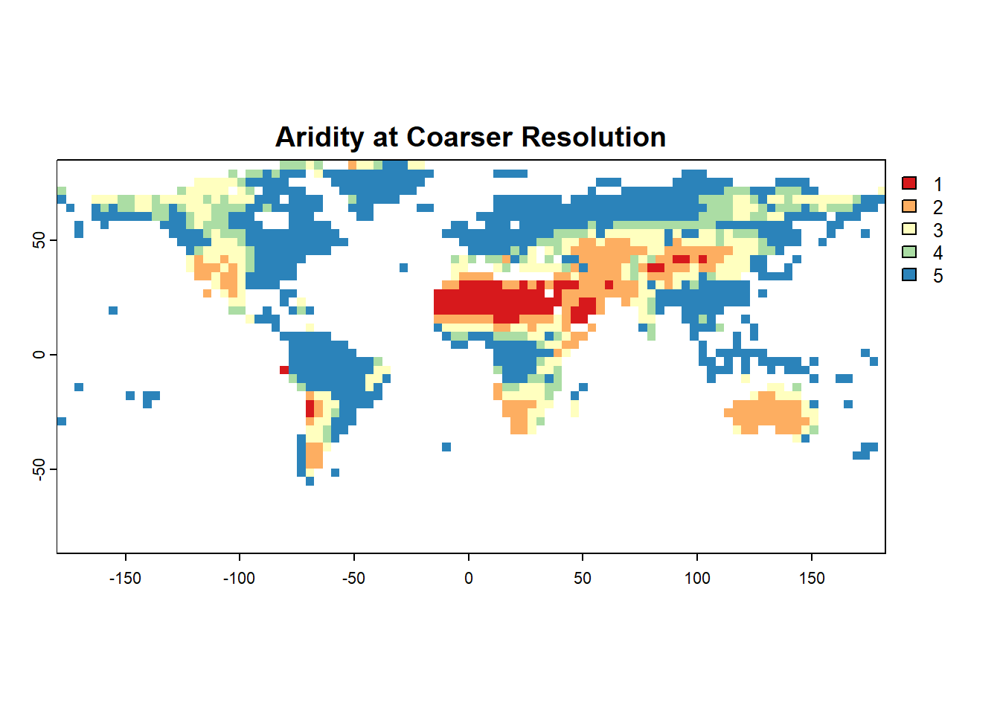

Raster resampling refers to changing the resolution of the raster. The term “resampling” used here implies that the pixel values are “sampled” to the new resolution using an interpolation method (nearest neighbor, bilinear, spline, min, max, mode, average etc). We will try three important functions for changing the resolution of a SpatRaster: terra::aggregate (resample from fine to coarse resolution), terra::disagg (resample from coarse to fine resolution) and terra::resample (resample to match the resolution of another raster). The following schematic helps illustrate the use of these functions:

Lets us now explore an example for raster resampling.
library(terra)# Import SMAP soil moisture rastersm=terra::rast("./SampleData-master/raster_files/SMAP_SM.tif") # Original resolution of raster for referenceres(sm)
[1] 0.373444 0.373444
#~~ Aggregate raster to coarser resolutionSMcoarse = terra::aggregate(sm, # Soil moisture rasterfact =10, # Aggregate by x 10fun = mean) # Function used to aggregate valuesres(SMcoarse)
[1] 3.73444 3.73444
#~~ Disaggregate raster to finer resolutionSMfine = terra::disagg(sm, fact=3, method='bilinear')res(SMfine)
# Resample aridity raster to coarse resolution aridityResamp=terra::resample(aridity, # Original raster SMcoarse, # Target resolution rastermethod='ngb') # bilinear or ngb (nearest neighbor) # Plot resampled aridity mapterra::plot(aridityResamp, col=mypal, main="Aridity at Coarser Resolution")

4.2 Raster Summary Statistics
Arithmetic operations a.k.a. arith-generic (+, -, *, /, ^, %%, %/%) on SpatRasters closely resemble simple vector-like operations. More details on arith-generic can be found here: https://rdrr.io/cran/terra/man/arith-generic.html. We will use global function to apply summary statistics and user-defined operations on cells of a raster.
# Simple arithmetic operationssm2=sm*2print(sm2) # Try sm2=sm*10, or sm2=sm^2 and see the difference in sm2 values
class : SpatRaster
dimensions : 456, 964, 1 (nrow, ncol, nlyr)
resolution : 0.373444, 0.373444 (x, y)
extent : -180, 180, -85.24595, 85.0445 (xmin, xmax, ymin, ymax)
coord. ref. : lon/lat WGS 84 (EPSG:4326)
source(s) : memory
varname : SMAP_SM
name : SMAP_SM
min value : 0.03999996
max value : 1.75335217
# User-defined statistics by defining own functionquant_fun =function(x, na.rm=TRUE){ # Remember to add "na.rm" optionquantile(x, probs =c(0.25, 0.75), na.rm=TRUE)} global(sm, quant_fun) # 25th, and 75th percentile of each layer
X25. X75.
SMAP_SM 0.09521707 0.2922016
Note: With a multi-layered raster object, global will summarize each layer separately.
4.2.1 Raster Summary with Polygons
Let’s explore using a spatial polygon/shapefile for summarizing a raster (in this case, global SMAP soil moisture) by using extract function from the terra library. We will also transform global aridity raster to a polygon using as.polygons and st_as_sf functions to find the mean soil moisture values for each aridity class.
First, we will use the IPCC shapefile to summarize the soil moisture raster.
# Import the shapefile of global IPCC climate reference regions (only for land) IPCC_shp =vect("./SampleData-master/CMIP_land/CMIP_land.shp")#~~~ Using shapefile to summarize a rastersm_IPCC_df=terra::extract(sm, # Spatraster to be summarized IPCC_shp, # Shapefile/ polygon to summarize the raster#df=TRUE, # Gives the summary statistics as a dataframefun=mean, # Desired statistic: mean, sum, min and max na.rm=TRUE) # Ignore NA values? TRUE=yes! head(sm_IPCC_df)
#~~~ Extract cell values for each region sm_IPCC_list=terra::extract(sm, # Raster to be summarized IPCC_shp, # Shapefile/ polygon to summarize the rasterdf=FALSE, # Returns a listfun=NULL, # fun=NULL will output cell values within each regionna.rm=TRUE) # Ignore NA values? yes! # Apply function on cell values for each regionsm_IPCC_mean=lapply(sm_IPCC_list,mean) # Returns a list of regional means sm_IPCC_mean=purrr::map(sm_IPCC_list,~mean(.x, na.rm=TRUE)) # Returns a list of regional means#~~ Try user defined functionmyfun=function (y){return(mean(y, na.rm=TRUE))} # User defined function for calculating means#~ Implement function using lapply and maplibrary(purrr)sm_IPCC_mean=lapply(sm_IPCC_list,myfun) # Returns a list of regional means sm_IPCC_mean=purrr::map(sm_IPCC_list,~myfun(.x)) # Returns a list of regional means sm_IPCC_mean=unlist(sm_IPCC_mean) # Unlist to return a vector head(sm_IPCC_mean) # Is this the same as the previous result?
ID SMAP_SM
21.1513647 0.2088026
4.2.2 Raster Summary with Classified Raster
In the next example, we will convert global aridity raster into a polygon based on aridity classification using as.polygons and st_as_sf functions. Global aridity raster has 5 classes with 5 indicating humid and 1 indicating hyper-arid climate. We will use this polygon to extract values from the Spatraster and summarize soil moisture for each aridity class.
#~~~ Convert a raster to a shapefilearidity=rast("./SampleData-master/raster_files/aridity_36km.tif") #Global aridity# Convert raster to shapefilearid_poly=as.polygons(aridity) # Convert SpatRaster to polygon and then to sf# Plot aridity polygonterra::plot(arid_poly, col=arid_poly$aridity_36km) # Colors based on aridity values (i.e. 1,2,3,4,5)
Summarize values of SMAP soil moisture raster for aridity classes:
sm_arid_df=terra::extract(sm, # Raster to be summarized arid_poly, # Shapefile/ polygon to summarize the raster#df=TRUE, # Gives the summary statistics as a dataframefun=mean, # Desired statistic: mean, sum, min and max na.rm=TRUE)# Ignore NA values? yes! # Lets plot the climate-wise mean of surface soil moisture{plot(sm_arid_df, xaxt ="n", # Disable x-tick labelsxlab="Aridity", # X axis labelylab="Soil moisture", # Y axis labeltype="b", # line typecol="blue", # Line colormain="Climate-wise mean of surface soil moisture")axis(1, at=1:5, labels=c("Hyper-arid", "Arid", "Semi-Arid","Sub-humid","Humid"))}